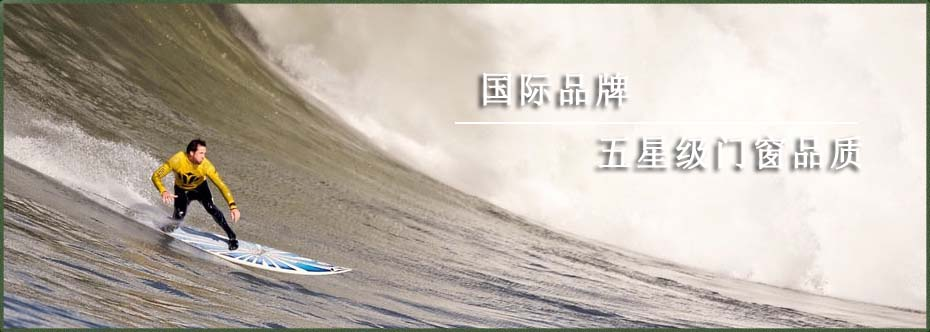
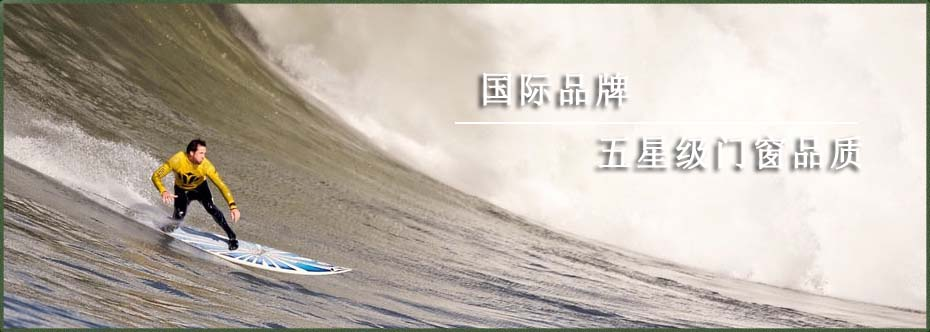
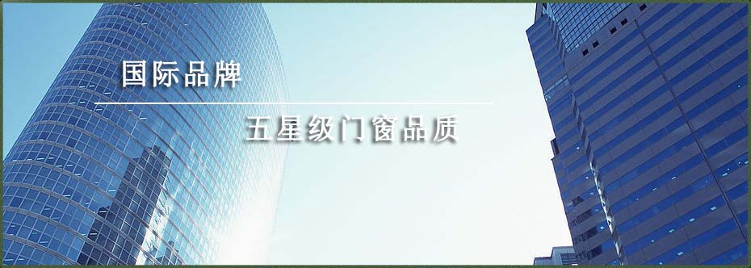
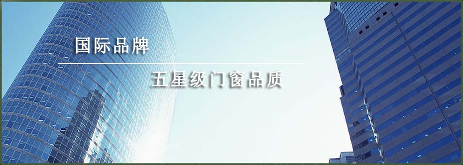

 

销售服务
您当前的位置：首页 > 服务中心我公司自投产以来，就已建立了严格且完善的产品质量保证体系，和全面实行电脑科学化管理．各工序有专职质检人员、工艺监督人员对每件产品都进行全方位、全过程监控管理。实行全员参与质量监控、以确保每件产品出厂后无质量问题。我公司产品售后服务工作由型材销售人员直接负责，并由技术部门提供技术支持。
服务承诺：1、按时按量按质交货，产品质量严格按照国家标准GB5237-2004各项技术指标要求执行生产，对每批出厂产品根据检测数据出具质量保证书。
2、在使用过程中如出现一些技术问题，我公司在接到通知后，将在第一时间给予回复．若需我公司专业工作人员到现场协作的，我公司都将积极配合，予以周到、细致的解决。
3、若出现质量异议客户有投诉现象，我公司将本着客户至上的原则，及时沟通、妥善处理。
服务措施：每位销售人员对所售出产品都有进行售后服务的义务，我公司为此专门制定了产品售后各部门的职责和质量补救措施。
1、销售部门负责及时将客户的投诉意见反馈回公司，公司制定解决方案和服务措施转到生产部门，实施售后服务工作．质检部门负责质量检查和监督工作，而生产部门、技术部门根据解决方案，及进配合处理。
2、及时收集客户反馈的产品信息，根据客户意见，查明情况分析原因，提出解决方案，在保证满足客户要求下，以最快的速度解决问题。
3、如因产品质量问题而造成的损坏，我公司负责免费更换．若因其它原因造成的产品质量问题，由双方协商解决。